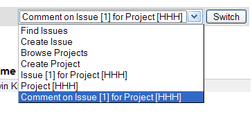
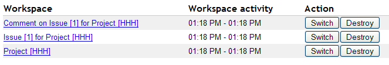
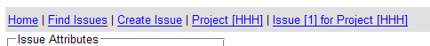

Chapter 8. Conversations and workspace management
Now we will take you through Seam's conversation model in finer detail.
The notion of a Seam conversation came about as a combination of three separate concepts:
the concept of a workspace, and effective workspace management.
the concept of an application transaction with optimistic semantics. Existing frameworks, based around a stateless architecture, were unable to provide effective management of extended persistence contexts.
the concept of a workflow task.
By unifying these ideas and providing deep support in the framework, we have created a powerful construct that allows for richer and more efficient applications, using less verbose code.
8.1. Seam's conversation model
All examples so far operate under a simple conversation model with the following rules:
A conversation context is always active during the apply request values, process validation, update model values, invoke application and render response phases of the JSF request life cycle.
At the end of the restore view phase of the JSF request life cycle, Seam attempts to restore any previous long-running conversation context. If none exists, Seam creates a new temporary conversation context.
When a @Begin method is encountered, the temporary conversation context is promoted to a long-running conversation.
When an @End method is encountered, any long-running conversation context is demoted to a temporary conversation.
At the end of the render response phase of the JSF request life cycle, Seam either stores the contents of a long-running conversation context, or destroys the contents of a temporary conversation context.
Any Faces request (a JSF postback) will propagate the conversation context. By default, non-Faces requests (GET requests, for example) do not propagate the conversation context.
If the JSF request life cycle is foreshortened by a redirect, Seam transparently stores and restores the current conversation context, unless the conversation was already ended via @End(beforeRedirect=true).
Seam transparently propagates the conversation context (including the temporary conversation context) across JSF postbacks and redirects. Without special additions, a non-Faces request (a GET request, for example) will not propagate the conversation context, and will be processed in a new temporary conversation. This is usually — but not always — the desired behavior.
To propagate a Seam conversation across a non-Faces request, the Seam conversation ID must be explicitly coded as a request parameter:
<a href="main.jsf?#{manager.conversationIdParameter}=#{conversation.id}">
Continue
</a>
Or, for JSF:
<h:outputLink value="main.jsf">
<f:param name="#{manager.conversationIdParameter}"
value="#{conversation.id}"/>
<h:outputText value="Continue"/>
</h:outputLink>
If you use the Seam tag library, this is equivalent:
<h:outputLink value="main.jsf">
<s:conversationId/>
<h:outputText value="Continue"/>
</h:outputLink>
The code to disable propagation of the conversation context for a postback is similar:
<h:commandLink action="main" value="Exit">
<f:param name="conversationPropagation" value="none"/>
</h:commandLink>
The equivalent for the Seam tag library is:
<h:commandLink action="main" value="Exit">
<s:conversationPropagation type="none"/>
</h:commandLink>
Disabling conversation context propagation is not the same as ending the conversation.
The conversationPropagation request parameter or <s:conversationPropagation> tag can also be used to begin and end conversations, or to begin a nested conversation.
<h:commandLink action="main" value="Exit">
<s:conversationPropagation type="end"/>
</h:commandLink>
<h:commandLink action="main" value="Select Child">
<s:conversationPropagation type="nested"/>
</h:commandLink>
<h:commandLink action="main" value="Select Hotel">
<s:conversationPropagation type="begin"/>
</h:commandLink>
<h:commandLink action="main" value="Select Hotel">
<s:conversationPropagation type="join"/>
</h:commandLink>
This conversation model makes it easy to build applications which behave correctly with respect to multi-window operation. For many applications, this is all that is required. Some complex applications have one or both of the following additional requirements:
A conversation spans many smaller units of user interaction, which execute serially or even concurrently. The smaller nested conversations have their own isolated set of conversation state, and have access to the state of the outer conversation.
The user can switch between many conversations within the same browser window. This feature is called workspace management.
8.2. Nested conversations
A nested conversation is created by invoking a method marked @Begin(nested=true) within the scope of an existing conversation. A nested conversation has its own conversation context, but can read values from the outer conversation's context. The outer conversation's context is read-only within a nested conversation, but because objects are obtained by reference, changes to the objects themselves will be reflected in the outer context.
Nesting a conversation initializes a context that is stacked on the context of the original, or outer, conversation. The outer conversation is considered the parent.
Any values outjected or set directly into the nested conversation’s context do not affect the objects accessible in the parent conversation’s context.
Injection, or a context look up from the conversation context, will first look up the value in the current conversation context. If no value is found, look up will continue down the conversation stack, if the conversation is nested. This behavior can be overridden.
When an @End is subsequently encountered, the nested conversation will be destroyed, and the outer conversation will resume, popping the conversation stack. Conversations may be nested to any arbitrary depth.
Certain user activities (workspace management, or the back button) can cause the outer conversation to be resumed before the inner conversation ends. In this case, it is possible to have multiple concurrent nested conversations belonging to the same outer conversation. If the outer conversation ends before a nested conversation ends, Seam destroys all nested conversation contexts along with the outer context.
The conversation at the bottom of the conversation stack is the root conversation. Destroying this conversation will always destroy all descendant conversations. You can achieve this declaratively by specifying @End(root=true).
A conversation can be thought of as a continuable state. Nested conversations allow the application to capture a consistent continuable state at various points in a user interaction, thus ensuring truly correct behavior in the face of backbuttoning and workspace management.
As mentioned previously, if a component exists in a parent conversation of the current nested conversation, the nested conversation will use the same instance. Occasionally, it is useful to have a different instance in each nested conversation, so that the component instance that of the parent conversation is invisible to its child conversations. You can achieve this behavior by annotating the component @PerNestedConversation.
8.3. Starting conversations with GET requests
JSF does not define any action listener triggered when a page is accessed via a non-Faces request (a HTTP GET request, for example). This can occur when a user bookmarks the page, or navigates to the page via an <h:outputLink>.
Sometimes we want a conversation to begin immediately the page is accessed. Since there is no JSF action method, we cannot annotate the action with @Begin.
Further problems arise when the page requires state to be fetched into a context variable. We have already seen two methods of solving this problem. If the state is held in a Seam component, we can fetch the state in a @Create method. If not, we can define a @Factory method for the context variable.
If neither option works for you, Seam lets you define a page action in the pages.xml file.
<pages>
<page view-id="/messageList.jsp" action="#{messageManager.list}"/>
...
</pages>
This action method is called at the beginning of the render response phase — that is, any time the page is about to be rendered. If a page action returns a non-null outcome, Seam will process any appropriate JSF and Seam navigation rules. This can result in a completely different page rendering.
If beginning a conversation is all you want to do before rendering the page, you can use a built-in action method:
<pages>
<page view-id="/messageList.jsp" action="#{conversation.begin}"/>
...
</pages>
You can also call this built-in action from a JSF control, and that #{conversation.end} similarly ends conversations.
The <begin-conversation> element can be used as follows for further control over joining existing conversations, or beginning a nested conversation, a pageflow, or an atomic conversation.
<pages>
<page view-id="/messageList.jsp">
<begin-conversation nested="true" pageflow="AddItem"/>
<page>
...
</pages>
There is also an <end-conversation> element.
<pages>
<page view-id="/home.jsp">
<end-conversation/>
<page>
...
</pages>
We now have five options to begin a conversation immediately the page is accessed:
Annotate the @Create method with @Begin
Annotate the @Factory method with @Begin
Annotate the Seam page action method with @Begin
Use <begin-conversation> in pages.xml.
Use #{conversation.begin} as the Seam page action method
8.4. Requiring a long-running conversation
Certain pages are only relevant in the context of a long-running conversation. One way to restrict access to such a page is to make the existence of a long-running conversation a prerequisite to the page being rendered.
Seam's page descriptor has a conversation-required attribute, which lets you indicate that the current conversation must be long-running (or nested) in order for a page to be rendered, like so:
<page view-id="/book.xhtml" conversation-required="true"/>
At present, you cannot indicate which long-running conversation is required. However, you can build on the basic authorization by checking whether a specific value is also present in the conversation within a page action.
When Seam determines that the page has been requested while no long-running conversation is present, it performs the following actions:
raises a contextual event called org.jboss.seam.noConversation
registers a warning status message with the bundle key, org.jboss.seam.NoConversation
redirects the user to an alternative page, if defined in the no-conversation-view-id attribute, like so:
<pages no-conversation-view-id="/main.xhtml"/>
This page will be used across the entire application; at present, multiple alternative pages cannot be defined.
8.5. Using <s:link> and <s:button>
JSF command links always perform a form submission with JavaScript, which causes problems with the web browser's "open in new window" or "open in new tab" feature. If you require this functionality in plain JSF, you need to use an <h:outputLink>, but there are two major limitations to this method:
JSF provides no way to attach an action listener to an <h:outputLink>, and
JSF does not propagate the selected row of a DataModel, since there is no actual form submission.
To solve the first problem, Seam implements the notion of a page action, but this does not solve the second. It is possible to work around this by passing a request parameter and requerying for the selected object on the server-side, and in some cases (like the Seam blog example application), this is the best approach. Since it is RESTful and does not require server-side state, bookmarking is supported. In other cases, where bookmarking is unnecessary, @DataModel and @DataModelSelection are transparent and convenient.
To replace this missing functionality, and to simplify conversation propagation further, Seam provides the <s:link> JSF tag.
The link can specify only the JSF ID:
<s:link view="/login.xhtml" value="Login"/>
It can also specify an action method, in which case the action outcome determines the page that results:
<s:link action="#{login.logout}" value="Logout"/>
If both a JSF view ID and an action method are specified, the view will be used unless the action method returns a non-null outcome:
<s:link view="/loggedOut.xhtml" action="#{login.logout}" value="Logout"/>
The link automatically propagates the selected row of a DataModel inside <h:dataTable>:
<s:link view="/hotel.xhtml" action="#{hotelSearch.selectHotel}"
value="#{hotel.name}"/>
You can leave the scope of an existing conversation:
<s:link view="/main.xhtml" propagation="none"/>
You can begin, end, or nest conversations:
<s:link action="#{issueEditor.viewComment}" propagation="nest"/>
If the link begins a conversation, you can specify the use of a particular pageflow:
<s:link action="#{documentEditor.getDocument}" propagation="begin"
pageflow="EditDocument"/>
<s:link action="#{documentApproval.approveOrReject}"
taskInstance="#{task}"/>
Finally, use <s:button> if you want the "link" rendered as a button:
<s:button action="#{login.logout}" value="Logout"/>
Messages are commonly displayed to the user to indicate the success or failure of an action. A JSF FacesMessage is convenient for this function. However, a successful action often requires a browser redirect. Since JSF does not propagate Faces messages across redirects, it is difficult to display success messages in plain JSF.
The built-in conversation-scoped Seam component named facesMessages solves this problem. (This requires the Seam redirect filter.)
@Name("editDocumentAction")
@Stateless
public class EditDocumentBean implements EditDocument {
@In EntityManager em;
@In Document document;
@In FacesMessages facesMessages;
public String update() {
em.merge(document);
facesMessages.add("Document updated");
}
}
When a message is added to facesMessages, it is used in the nextg render response phase for the current conversation. Since Seam preserves even temporary conversation contexts across redirects, this works even without a long-running conversation.
You can even include JSF EL expressions in a Faces message summary:
facesMessages.add("Document #{document.title} was updated");
Messages are displayed as usual:
<h:messages globalOnly="true"/>
8.7. Natural conversation IDs
When working with conversations that deal with persistent objects, there are several reasons to use the natural business key of the object instead of the standard, "surrogate" conversation ID.
Easy redirect to existing conversation
If the user requests the same operation twice, it can be useful to redirect to an existing conversation. Take the following situation, for example:
You are on Ebay, halfway through paying for an item you won as a Christmas present for your parents. You want to send it straight to them, but once you have entered your payment details, you cannot remember your parents' address. While you find the address, you accidentally reuse the same browser window, but now you need to return to payment for the item.
With a natural conversation, the user can easily rejoin the previous conversation and pick up where they left off. In this case, they can rejoin the payForItem conversation with the itemId as the conversation ID.
User-friendly URLs
A user-friendly URL is meaningful (refers to page contents plainly, without using ID numbers), and has a navigable heirarchy (that is, the user can navigate by editing the URL).
With a natural conversation, applications can generate long, complex URLs, but display simple, memorable URLs to users by using URLRewrite. In the case of our hotel booking example, http://seam-hotels/book.seam?hotel=BestWesternAntwerpen is rewritten as http://seam-hotels/book/BestWesternAntwerpen — much clearer. Note that URLRewrite relies upon parameters: hotel in the previous example must map to a unique parameter on the domain model.
8.8. Creating a natural conversation
Natural conversations are defined in pages.xml:
<conversation name="PlaceBid" parameter-name="auctionId"
parameter-value="#{auction.auctionId}"/>
The first thing to note in the above definition is the conversation name, in this case PlaceBid. The conversation name identifies this particular named conversation uniquely, and is used by the page definition to identify a named conversation in which to participate.
The parameter-name attribute defines the request parameter that will hold the natural conversation ID, and replace the default conversation ID parameter. In this case, parameter-name is auctionId. This means that the URL of your page will contain auctionId=765432 instead of a conversation parameter like cid=123.
The final attribute, parameter-value, defines an EL expression to evaluate the value of the natural business key to use as the conversation ID. In this example, the conversation ID will be the primary key value of the auction instance currently in scope.
Next, we define the pages participating in the named conversation. This is done by specifying the conversation attribute for a page definition:
<page view-id="/bid.xhtml" conversation="PlaceBid" login-required="true">
<navigation from-action="#{bidAction.confirmBid}">
<rule if-outcome="success">
<redirect view-id="/auction.xhtml">
<param name="id" value="#{bidAction.bid.auction.auctionId}"/>
</redirect>
</rule>
</navigation>
</page>
8.9. Redirecting to a natural conversation
When initiating or redirecting to a natural conversation, there are several ways to specify the natural conversation name. We will start with the following page definition:
<page view-id="/auction.xhtml">
<param name="id" value="#{auctionDetail.selectedAuctionId}"/>
<navigation from-action="#{bidAction.placeBid}">
<redirect view-id="/bid.xhtml"/>
</navigation>
</page>
Here we see that invoking #{bidAction.placeBid} redirects us to /bid.xhtml, which is configured with the natural conversation ID PlaceBid. Our action method declaration looks like this:
@Begin(join = true)
public void placeBid()
When named conversations are specified in the <page/> element, redirection to the named conversation occurs as part of navigation rules following the invocation of the action method. This can cause problems when redirecting to an existing conversation, since redirection needs to occur before the action method is invoked. Therefore, the conversation name must be specified before the action is invoked. One method of doing this uses the <s:conversationName> tag:
<h:commandButton id="placeBidWithAmount" styleClass="placeBid"
action="#{bidAction.placeBid}">
<s:conversationName value="PlaceBid"/>
</h:commandButton>
You can also specify the conversationName attribute for either the s:link or s:button:
<s:link value="Place Bid" action="#{bidAction.placeBid}"
conversationName="PlaceBid"/>
8.10. Workspace management
Workspace management is the ability to "switch" conversations in a single window. Seam workspace management is completely transparent at the Java level. To enable workspace management:
Provide description text for each view ID (when using JSF or Seam navigation rules) or page node (when using jPDL pageflows). Workspace switchers display this description text to the user.
Include one or more workspace switcher JSP or Facelets fragments in your page. Standard fragments support workspace management via a drop-down menu and a list of conversations, or "breadcrumbs".
8.10.1. Workspace management and JSF navigation
With JSF or Seam navigation rules in place, Seam switches to a conversation by restoring the current view-id for that conversation. The descriptive text for the workspace is defined in a file called pages.xml, which Seam expects to find in the WEB-INF directory alongside faces-config.xml:
<pages>
<page view-id="/main.xhtml">
<description>Search hotels: #{hotelBooking.searchString}</description>
</page>
<page view-id="/hotel.xhtml">
<description>View hotel: #{hotel.name}</description>
</page>
<page view-id="/book.xhtml">
<description>Book hotel: #{hotel.name}</description>
</page>
<page view-id="/confirm.xhtml">
<description>Confirm: #{booking.description}</description>
</page>
</pages>
The Seam application will still work if this file is not present. However, workplace switching will not be available.
8.10.2. Workspace management and jPDL pageflow
When a jPDL pageflow definition is in place, Seam switches to a particular conversation by restoring the current jBPM process state. This is a more flexible model, since it allows the same view-id to have different descriptions depending on the current <page> node. The description text is defined by the <page> node:
<pageflow-definition name="shopping">
<start-state name="start">
<transition to="browse"/>
</start-state>
<page name="browse" view-id="/browse.xhtml">
<description>DVD Search: #{search.searchPattern}</description>
<transition to="browse"/>
<transition name="checkout" to="checkout"/>
</page>
<page name="checkout" view-id="/checkout.xhtml">
<description>Purchase: $#{cart.total}</description>
<transition to="checkout"/>
<transition name="complete" to="complete"/>
</page>
<page name="complete" view-id="/complete.xhtml">
<end-conversation />
</page>
</pageflow-definition>
8.10.3. The conversation switcher
Including the following fragment in your JSP or Facelets page will include a drop-down menu that lets you switch to any current conversation, or any other page of the application:
<h:selectOneMenu value="#{switcher.conversationIdOrOutcome}">
<f:selectItem itemLabel="Find Issues" itemValue="findIssue"/>
<f:selectItem itemLabel="Create Issue" itemValue="editIssue"/>
<f:selectItems value="#{switcher.selectItems}"/>
</h:selectOneMenu>
<h:commandButton action="#{switcher.select}" value="Switch"/>
This example includes a menu that contains an item for each conversation, plus two additional items that let the user begin an additional conversation.
Only conversations with a description (specified in pages.xml) will be included in the drop-down menu.

8.10.4. The conversation list
The conversation list is similar to the conversation switcher, except that it is displayed as a table:
<h:dataTable value="#{conversationList}" var="entry"
rendered="#{not empty conversationList}">
<h:column>
<f:facet name="header">Workspace</f:facet>
<h:commandLink action="#{entry.select}" value="#{entry.description}"/>
<h:outputText value="[current]" rendered="#{entry.current}"/>
</h:column>
<h:column>
<f:facet name="header">Activity</f:facet>
<h:outputText value="#{entry.startDatetime}">
<f:convertDateTime type="time" pattern="hh:mm a"/>
</h:outputText>
<h:outputText value=" - "/>
<h:outputText value="#{entry.lastDatetime}">
<f:convertDateTime type="time" pattern="hh:mm a"/>
</h:outputText>
</h:column>
<h:column>
<f:facet name="header">Action</f:facet>
<h:commandButton action="#{entry.select}" value="#{msg.Switch}"/>
<h:commandButton action="#{entry.destroy}" value="#{msg.Destroy}"/>
</h:column>
</h:dataTable>
This can be customized for your own applications.

Only conversations with a description will be included in the list.
Note that the conversation list also lets the user destroy workspaces.
Breadcrumbs are a list of links to conversations in the current conversation stack. They are useful for applications with a nested conversation model:
<ui:repeat value="#{conversationStack}" var="entry">
<h:outputText value=" | "/>
<h:commandLink value="#{entry.description}" action="#{entry.select}"/>
</ui:repeat>
8.11. Conversational components and JSF component bindings
Conversational components have one minor limitation: they cannot be used to hold bindings to JSF components. (Generally we recommend avoiding this feature of JSF unless absolutely necessary, since it creates a hard dependency from application logic to the view.) On a postback request, component bindings are updated during the Restore View phase, before the Seam conversation context has been restored.
You can work around this by storing component bindings with an event-scoped component, and injecting this into the requiring conversation-scoped component.
@Name("grid")
@Scope(ScopeType.EVENT)
public class Grid {
private HtmlPanelGrid htmlPanelGrid;
...
}@Name("gridEditor")
@Scope(ScopeType.CONVERSATION)
public class GridEditor {
@In(required=false)
private Grid grid;
...
}
You are also limited in that a conversation-scoped component cannot be injected into an event-scoped component with a JSF control bound to it. This includes Seam built-in components like facesMessages.
You can also access the JSF component tree with the implicit uiComponent handle. The following example accesses the getRowIndex() of the UIData component that backs the data table during iteration, and prints the current row number:
<h:dataTable id="lineItemTable" var="lineItem"
value="#{orderHome.lineItems}">
<h:column>
Row: #{uiComponent['lineItemTable'].rowIndex}
</h:column>
...
</h:dataTable>
In this map, JSF UI components are available with their client identifier.
8.12. Concurrent calls to conversational components
Section 5.1.10, “Concurrency model” contains a general discussion of concurrent calls to Seam components. In this section, we discuss the most common situation in which you will encounter concurrency — when accessing conversational components from AJAX requests. We will also look at the options provided by an AJAX client library, and RichFaces, to control events originating from the client.
Conversational components do not allow true concurrent access, so Seam queues each request for serial processing. This allows each request to be executed in a deterministic fashion. However, there are some limitations to a simple queue. If a method, for whatever reason, takes a long time to complete, running it whenever the client generates a request can lead to Denial of Service attacks. AJAX is also often used to provide quick status updates to users, so continuing to run an action after a long time is not useful.
Therefore, when you work inside a long-running conversation, Seam queues the action even for a period of time (the concurrent request timeout). If Seam cannot process the event before timeout, it creates a temporary conversation and prints a message for the user, informing them of the timeout. It is therefore important not to flood the server with AJAX events.
We can set a sensible default for the concurrent request timeout (in milliseconds) in components.xml:
<core:manager concurrent-request-timeout="500" />
The concurrent request timeout can also be adjusted on a page-by-page basis:
<page view-id="/book.xhtml" conversation-required="true"
login-required="true" concurrent-request-timeout="2000" />
So far we have discussed AJAX requests that appear serial to the user, where the client tells the server than an event has occurred, and then rerenders part of the page based on the result. This approach is sufficient when the AJAX request is lightweight (the methods called are simple, for example, calculating the sum of a column of numbers), but complex computations require a different approach.
A poll-based approach is where the client sends an AJAX request to the server, causing actions to begin immediate asynchronous execution on the server. The client then polls the server for updates while the actions are executed. This is a sensible approach when it is important that no action in a long-running action sequence times out.
8.12.1. How should we design our conversational AJAX application?
The first question is whether to use the simpler "serial" request method, or a polling approach.
If you want to use serial requests, you must estimate the time required for your request to complete. You may need to alter the concurrent request timeout for this page, as discussed in the previous section. A queue on the server side is probably necessary, to prevent requests from flooding the server. If the event occurs often (for example, a keystroke, or onblur of input fields) and immediate client update is not a priority, set a request delay on the client side. Remember to factor the possibility of server-side queueing into your request delay.
Finally, the client library may provide an option to abort unfinished duplicate requests in favor of the most recent.
A polling approach requires less fine-tuning — simply mark your action method @Asynchronous and decide on a polling interval:
int total;
@Asynchronous
public void calculateTotal() {
total = someReallyComplicatedCalculation();
}
public int getTotal() {
return total;
}
8.12.2. Dealing with errors
However carefully your application is designed to queue concurrent requests to your conversational component, there is a risk that the server will overload. When overload occurs, not all requests will be processed before the concurrent-request-timeout period expires. In this case, Seam throws a ConcurrentRequestTimeoutException, which is handled in pages.xml. We recommend sending a HTTP 503 error:
<exception class="org.jboss.seam.ConcurrentRequestTimeoutException"
log-level="trace">
<http-error error-code="503" />
</exception>
The server is currently unable to handle the request due to a temporary overloading or maintenance of the server. The implication is that this is a temporary condition which will be alleviated after some delay.
Alternatively you could redirect to an error page:
<exception class="org.jboss.seam.ConcurrentRequestTimeoutException"
log-level="trace">
<end-conversation/>
<redirect view-id="/error.xhtml">
<message>
The server is too busy to process your request,
please try again later
</message>
</redirect>
</exception>
ICEfaces, RichFaces AJAX and Seam Remoting can all handle HTTP error codes. Seam Remoting will pop up a dialog box showing the HTTP error. ICEfaces will indicate the error in its connection status component. RichFaces provides the most complete support for handling HTTP errors by providing a user definable callback. For example, to show the error message to the user:
<script type="text/javascript">
A4J.AJAX.onError = function(req,status,message) {
alert("An error occurred");
};
</script>
If, rather than an error code, the server reports that the view has expired, perhaps because a session timed out, use a separate callback function in RichFaces:
<script type="text/javascript">
A4J.AJAX.onExpired = function(loc,message) {
alert("View expired");
};
</script>
Alternatively, you can allow RichFaces to handle the error. In this case, the user will receive a prompt reading, "View state could not be restored — reload page?" This message can be globally customized by setting the following message key in an application resource bundle:
AJAX_VIEW_EXPIRED=View expired. Please reload the page.
8.12.3. RichFaces (Ajax4jsf)
RichFaces (Ajax4jsf) is the most common AJAX library used with Seam, and provides all of the controls discussed in the previous section.
eventsQueue
Provides a queue in which events are placed. All events are queued, and requests are sent to the server serially. This is useful if the request to the server can take some time to execute (for example, in heavy computation, retrieving information from a slow source) since it prevents server flooding.
ignoreDupResponses
Ignores the response produced by a request if a more recent "similar" request is already queued. ignoreDupResponses="true" does not cancel the processing of the request on the server side; it only prevents unnecessary updates on the client side.
With Seam conversations, this option should be used with care, since it allows multiple concurrent requests.
requestDelay
Defines the time in milliseconds that the request will remain on the queue. If, at this time, the request has not been processed, the request will either be sent (regardless of whether a response has been received), or discarded (if there is a more recent "similar" event queued).
With Seam conversations, this option should be used with care, as it allows multiple concurrent requests. The delay that you set (in combination with the concurrent request timeout) must be longer than the action will take to execute.
<a:poll reRender="total" interval="1000" />
Polls the server and rerenders an area, as required.